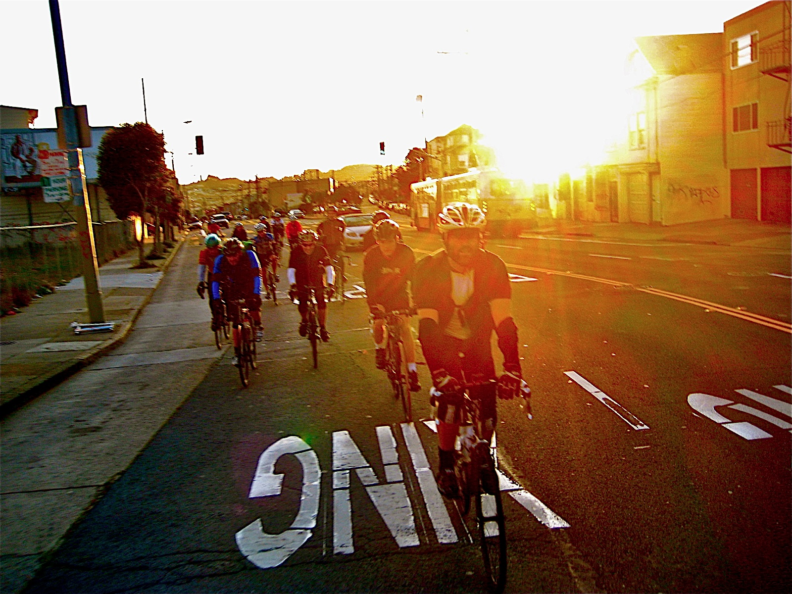

About SF2G
Routes
New Riders
FAQ
Terms
Articles
Extras
Bayway
Skyline
Half Moon Bay Way
Royale
Fleaway
MEBW
East Bay Skyline (FEBW)
Join us
SF2G Strava Segments
Some of the most contested stretches of road in the world.
Bayway/BEX

Skyline
Royale
Helpful Links
FFFF - No Rider Left Behind Day
Terms & Definitions
Ride Styles
Safety Suggestions
Bike Preparation
Join the List
SF2G History
Press/Articles
Photo Archive
Jakroo "Hi-Viz" Kit
SF2G Strava Segments